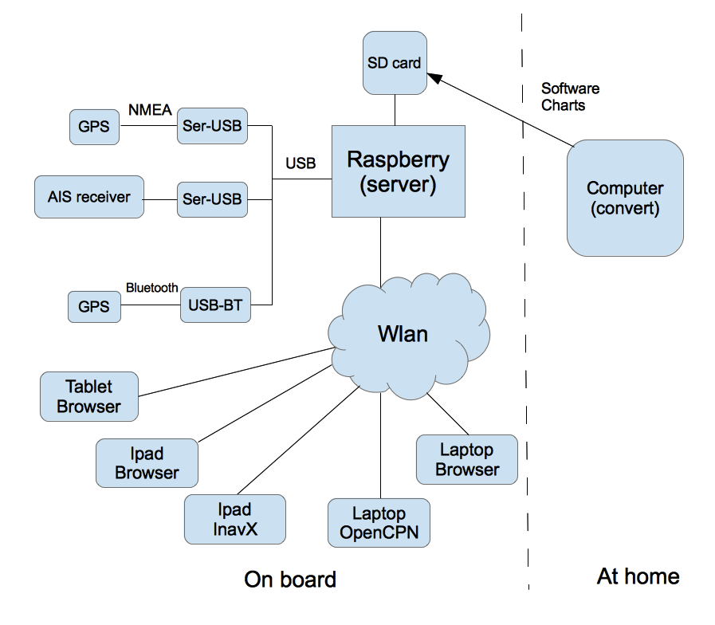

Nachdem ich schon eine ganze Weile mit Rasterkarten unterwegs navigiere (erst unter Windows mit Seaclear, dann unter Windows und OSX mit OpenCPN und OziExplorer) hatte ich schon eine ganze Weile nach Möglichkeiten gesucht, das zu erweitern und noch besser tauglich für unterwegs zu machen.
Meine Wunschliste dabei war:
Navigation auf kleinen Geräten (Laptop ist immer ein wenig unhandlich) – 7 oder 10 Zoll Tablet wäre Ideal
Navigation auch im Cockpit
Verknüpfung mit der „on board“ Navigation (seit einiger Zeit habe ich ein RO4800 als Funke, das auch einen AIS Decoder hat – und ja auch schon GPS Daten bekommt)
Nutzung der Rasterkarten (BSB, NV, alles was sich per Download über mobile atlas creator bekommen lässt...)
Minimaler Installationsaufwand
Klein, wenig Stromverbrauch (sollte möglichst immer laufen können)
Wenig „Bastelarbeit“ - also möglichst keine eigenen Schaltungen löten
Irgendwann habe ich mal den raspberry pi entdeckt und nachdem er zu Hause jetzt schon eine Weile als media center arbeitet, dachte ich, dass der eine gute Basis für einen Bordcomputer abgeben könnte.
Allerdings musste ich nach einiger Recherche feststellen, dass es noch keine fertige Software gab, die meinen Anforderungen genügen würde. Insbesondere die Einbettung der seriellen Schnittstellen (typisch seriell-usb-Wandler) macht immer wieder Mühe, da Linux hier immer etwas kreativ ist...
Also habe ich beschlossen mich selbst daran zu machen. Im Folgenden will ich meine Lösung beschreiben, da es ja vielleicht Interessierte gibt, die es Nachnutzen möchten. Die gesamte Software steht zum download unter einer open source Lizenz bereit.

Wie
im Bild zu sehen, besteht die gesamte Lösung aus mehreren Teilen:
Einem Raspberry Pi mit einer server software (avnav_server.py), die die angeschlossenen Geräte (NMEA über Seriell-USB Wandler – z.B. PL 2303), Bluetooth GPS,... abfragt, die Daten aufbereitet und per WLAN zur Verfügung stellt
Einer Software für Windows/OSx/Linux, die zum Vorbereiten und Konvertieren der Karten dient
Über ein WLAN, das der raspberry pi als access point bereitstellt, können verschiedene Geräte auf die Daten zugreifen. Dabei gibt es mehrere Varianten:
Auf den Geräten (z.B. Ipad oder Laptop) kann eine Navigationssoftware laufen (getestet: InavX,OpenCPN), diese greifen über TCP auf die NMEA Daten zu. Navigationssoftware und Karten müssen natürlich auf den Geräten installiert sein.
Auf den Geräten läuft nur ein Browser, die Navigation erfolgt per Java Script app, die vom raspberry bereitgestellt wird. Dazu muss nur die entsprechende URL aufgerufen werden. In diesem Falle ist auf den Geräten keine Software installiert, nur ein aktueller Browser muss vorhanden sein (getestet: Chrome unter Windows, OSX, Safari, Android ab 4.x – Chrom/Stock/Boat Browser, IOS, Blackberry stockBrowser, WebBrowser mini).
Die server software auf dem raspberry ist in python geschrieben und über ein xml file konfigurierbar (was im Normalfall aber nicht notwendig sein sollte). Ich stelle neben dieser Software auch ein fertiges Image für den raspberry zur Verfügung, dass nur noch auf eine SD-Karte installiert werden muss (Empfehlung: mindestens 8GB, mehr ist besser...).
Die Web Applikation bietet eine (bisher recht simple) Navigation mit Rasterkarten inklusive AIS Darstellung. Falls die Web-Applikation verwendet werden soll, müssen die Karten dafür auch auf dem raspberry installiert werden. Diese müssen dazu vorher auf dem PC (Windows, Osx, Linux) konvertiert werden. Im Wesentlichen können die folgenden Kartenquellen verarbeitet werden:
Alle Kartentypen, die die GDAL software lesen kann (also insbesondere BSB Karten)
Mit Mobile Atlas Creator heruntergeladene Karten
Zur Nutzung von NV digital Karten bitte ich um Kontaktaufnahme, hier ist die Einhaltung der Lizenzbedingungen ein Thema.
In den folgenden Abschnitten gehe ich auf die Funktion der einzelnen Teile ein wenig genauer ein.
Auf dem raspberry pi ist zunächst ein ganz normales Debian image installiert (ca. 2GB). Dazu kommen einige Zusatzpakete (liste siehe unten) und meine Software.
Der Hauptbestandteil der Sofware auf dem raspberry pi ist ein in python geschriebener Server.
Dieser Server versucht alle am raspberry angeschlossenen seriellen Geräte zu erkennen und deren NMEA Daten zu lesen. Typisch werden die Geräte über seriell-usb Wandler angeschlossen (bei mir z.B. PL2303). Man muss ein wenig aufpassen, dass man einen Wandler hat, der vom Raspberry auch sauber unterstützt wird (…). Da das Verwalten der seriellen Schnittstellen unter Linux etwas magisch ist, scant der Server (per Dbus) die angeschlossenen Geräte auf eine entsprechende serielle Klasse. Anschliessend versucht er ein auto bauding zwischen 4800 und 34000 Baud und bemüht sich, NMEA Daten zu erkennen. Falls keine Daten empfangen werden, wird die Schnittstelle geschlossen und das Spiel beginnt von vorn. Damit „überlebt“ er auch das anschliessen/abstecken von Wandlern im Betrieb oder das An- bzw. Abschalten von Geräten. Bei mir hängt ein RO4800 mit AIS Decoder dran, die GPS Daten werden durchgereicht. Alternativ versucht er auch Kontakt zu seriellen Bluetooth Geräten aufzunehmen, falls er per discovery welche findet und versucht ebenfalls NMEA Daten zu Lesen. Getestet bei mir mit einer Holux GPS SlimXXX. In diesem Sinne arbeitet er auch als NMEA Multiplexer.
Alle GPS-Daten werden in eine Input queue gestellt. Aus dieser werden verbundene TCP Empfänger (z.B. OpenCPN) versorgt – jeder empfangene Datensatz wird einfach an diese weitergereicht. Per Default lauscht der SocketWriter auf Port 34567.
Anschliessend werden die NMEA Daten an den Decoder weitergereicht. Auf dem raspberry benutze ich dazu gpsd. Leider liess der sich nicht verwenden, um direkt die seriellen Schnittstellen zu lesen, daher macht der avnnav_server einen Socket auf, an den sich der gpsd connected und von dem er die Daten liest. Das Starten des gpsd übernimmt ebenfalls der anav server. Am „anderen Ende“ werden über die gpsd python Schnittstelle die Dekodierten Daten ausgelesen (gps Daten und AIS Daten) und im Server abgelegt für den Zugriff per HTTP aus der WebApp. Der gpsd wird überwacht und bei Fehlern neu gestartet. Zusätzlich werden die dekodierten Daten auch benutzt um Track Dateien zu schreiben.
Über den integrierten WebServer kann der Zugriff auf diese dekodierten Daten erfolgen (per HTTP GET, Antwort als json).
Falls gültige GPS Zeitinformationen empfangen werden, wird die Systemzeit des raspberry entsprchend eingestellt.
Auf dem raspberry gibt es noch einen service, der den avnav_server beim Systemstart automatisch startet und es auch ermöglicht, ihn geordnet zu beenden.
Da der gesamte server in python geschrieben ist, kann er auch (vor allem zu Testzwecken) unter Windows oder Osx, Linux laufen. Dazu muss python ab 2.6 installiert sein, falls reale serielle Daten gelesen werden sollen noch pyserial. In diesem Falle steht gpsd als Dekoder ja nicht zur Verfügung, es wird dann ein interner Dekoder genutzt, der die wichtigsten NMEA Sequenzen dekodiert und ein AIS Dekoder in python, der ebenfalls durch das gpsd Projekt bereitgestellt wird.
Der Server kann in weiten Grenzen durch ein xml File konfiguriert werden, für die verschiedenen Nutzungsfälle liefere ich dokumentierte Beispiele mit.
Auf dem raspberry ist die Software in der folgenden Verzeichnisstruktur installiert:
|
Verzeichnis |
Inhalt |
|---|---|
/data/ |
Eine separate data partition. Diese wird automatisch beim ersten Hochfahren angelegt und umfasst die gesamte Speicherkarte (- ca. 2GB für die boot partition und die root partition). Das Filesystem ist so angelegt, dass es gut mit sehr vielen kleinen Dateien umgehen kann (für die Karten). |
|
/data/avnav/charts |
Verzeichnis für die Kartendateien. Jeder verwendete Kartensatz muss in einem separaten Unterverzeichnis liegen. Dort hinein müssen jeweils die avnav.xml und die erzeugten Kartenverzeichnisse kopiert werden (siehe Karten konvertieren). |
|
/dava/avnav/log |
logfiles |
|
/data/avnav/tracks |
Die trackfiles. Sie werden in einem File pro Tag gespeichert. Momentan ist das ein simples csv Format, eine Konvertierung nach gpx steht schon auf der todo Liste. |
|
/home/pi/avnav/data |
Links zu /data/avnav/charts, /data/avnav/tracks, /data/avnav/log. Ausserdem die config Datei avnav_server.xml. Beim ersten Start wird sie dorthin kopiert, danach aber nicht wieder überschrieben. Etwaige Anpassungen also hier. |
|
/home/pi/avnav/setup.sh |
Kann als root aufgerufen werden, um ein update der Software zu
machen (bei Internet-Verbindung): |
|
/home/pi/avnav/program |
Das Program-Verzeichnis. |
|
/home/pi/avnav/program/server |
Der eigentliche server: avnav_server.py, |
|
/home/pi/avnav/program/raspberry |
Raspberry spezifische software Anteile (u.a. der service zum Starten von avnav_server) |
|
/home/pi/avnav/program/libraries |
Die verwendeten JS libraries für die WebApp. |
|
/home/pi/avnav/program/viewer |
Die WebApp. |
|
/etc/init.d/ |
Die services, die zum Starten benutzt werden (links zu
/home/pi/avnav/program/raspberry): |
Bis auf die init scripte läuft die gesamte Software unter dem Nutzer pi. Die Installation muss allerdings als root erfolgen.
Standardmässig wird die SD Karte für den pi mit 2 Partitionen versehen:
eine FAT32 formatierte boot Partition (ca. 60MB), gemounted nach /boot
eine root partition, ca. 2GB
Bei meinem Image kommt dazu noch eine separate /data partition mit dem Rest der SD-Karte. Das empfiehlt sich in jedem Fall, da für die Speicherung der Karten sehr viele kleine Dateien erzeugt werden und die standar-Partitionen darauf nicht gut vorbereitet sind.
Die Installation der Software hängt stark davon ab, ob mein Image verwendet wird, oder ob von einem „stock“ Image ausgegangen wird. Beide Varianten beschreibe ich kurz.
Für diese Variante einfach unter Windows/Linux/OSx das image von XXX herunterladen und wie unter XXX beschrieben auf eine SD Karte spielen. Danach muss man sich einmal auf dem pi einloggen und ggf. ein paar Anpassungen vornehmen. Am einfachsten geht das, wenn man den pi im LAN anschließt und einen router/dhcp-server (z.B. Fritz Box) aktiv hat. Dann holt er sich per DHCP eine IP Adresse. Diese kann man auf dem Router sehen bzw. unter Linux z.B. per ping -b <brodcast-address> herausfinden.
Die Paßworte sind auf Standardwerte gesetzt – also login pi, Paßwort raspberry. Per sudo -i wechselt man in eine root shell. Man sollte kontrollieren, ob die /data partition existier und gemounted ist (df -h, mount). Anschliessend sollte man noch das Paßwort für den user pi ändern (passwd). Per XXX sollte ein Übertakten auf 1GHz eingestellt werden.
Am schwierigsten kann sich das Aufsetzen des WLAN gestalten. Das hängt vom verwendeten Adapter ab. Ich habe einen rtl8192cu verwendet (XXX). Dazu musste ich den hostapd (/usr/sbin/hostapd) austauschen gegen den von http://dl.dropbox.com/u/1663660/hostapd/hostapd.zip. Der originale ist noch als hostapd.ori vorhanden – also ggf. wieder umbennen. Anpassungen zur Konfiguration muss man in /etc/hostapd/hostapd.conf vornehmen. In jedem Falle sollte hier der WPA-Key getauscht werden (standard: SSID avnav, pw: avnav-secret). Ggf. muss man den driver ändern. Danach service hostapd restart und die WLAN-Verbindung testen. Eine gute Anleitung findet sich unter http://elinux.org/RPI-Wireless-Hotspot.
Das WLAN hat den Adressbereich 192.168.20.0/24. Der pi selbst ist auf 192.168.20.10 erreichbar (ggf. als url im Browser benutzen, wenn die Namensauflösung nicht funktioniert). Auf dem pi läuft ein DHCP server und ein DNS server (dnsmasqd). Die Konfiguration kann angepasst werden in /etc/dnsmasqd.conf. Wenn der pi im LAN angeschlossen ist, versucht er per DHCP eine Adresse zu bekommen, das WLAN wird per NAT an das LAN interface weitergereicht.
Für die Auslieferung der Karten ist der lighthttpd installiert. Dieser kann gff. Auch für weitere Funktionen genutzt werden. Er ist jedoch per default auf port 81 aufgesetzt. Port 80 ist direkt zum Web server von avnav weitergeleitet (dieser lauscht auf port 8080).
Wenn alles richtig aufgesetzt ist, sollte sich unter der url http://avnav die Einstiegsseite der WebApp öffnen.
Mit sudo service avnav status kann man den Status des servers prüfen, mit sudo service avnav start bzw. sudo service avnav stop kann man ihn starten und stoppen.
Hierbei zunächst das image von
http://www.raspberrypi.org/downloads
installieren (Anleitung siehe dort). Danach muss man eine Reihe
weitere Pakete installieren, die Konfigurationen vornehmen und zum
Schluss die avnav software installieren. Nach dem ersten reboot
Übertakten auf 1GHz einstellen.
Hier eine kurze Dokumentation der
Schritte (ohne ganz detaillierte Beschreibung):
gpsd
http://blog.retep.org/2012/06/18/getting-gps-to-work-on-a-raspberry-pi/
sudo
apt-get install gpsd gpsd-clients python-gps
bluetooth
http://www.rpiblog.com/2012/08/bluetooth-pairing-of-raspberry-pi-with.html
apt-get
install -y bluetooth [bluez-utils blueman]
pyserial
copy pyserial to pi
(https://pypi.python.org/packages/source/p/pyserial/pyserial-2.6.tar.gz#md5=cde799970b7c1ce1f7d6e9ceebe64c98)
unpack
tar -xvzf …
cd into pyserial dir
python setup.py install
python bluetooth support
sudo apt-get install
python-bluez
python udev support
sudo apt-get install python-pyudev
hotspot - see http://elinux.org/RPI-Wireless-Hotspot
sudo
apt-get install hostapd dnsmasqd
we use 192.168.20.00 for our
wireless setup
20...254 - dhcp raspi
10 - raspi itself
etc/hosts
192.168.20.10 avnav
/etc/dnsmasqd.conf
interface=wlan0
domain=avnav
dhcp-range=192.168.20.20,192.168.20.254,255.255.255.0,12h
dhcp-option=42,0.0.0.0
natting
/etc/sysctl.conf: net.ipv4.ip_forward=1
iptables
-t nat -A POSTROUTING -o eth0 -j MASQUERADE
iptables -A FORWARD
-i eth0 -o wlan0 -m state --state RELATED,ESTABLISHED -j
ACCEPT
iptables -A FORWARD -i wlan0 -o eth0 -j
ACCEPT
iptables-save > /etc/iptables.ipv4.nat
/etc/network/interfaces
auto lo
iface lo inet
loopback
iface eth0 inet dhcp
allow-hotplug wlan0
iface
wlan0 inet static
address 192.168.20.10
netmask
255.255.255.0
up iptables-restore < /etc/iptables.ipv4.nat
/etc/hostapd/hostapd.conf
interface=wlan0
driver=rtl8192cu
ssid=avnav
hw_mode=g
channel=6
macaddr_acl=0
auth_algs=1
ignore_broadcast_ssid=0
wpa=2
wpa_passphrase=avnav-secret
wpa_key_mgmt=WPA-PSK
wpa_pairwise=TKIP
rsn_pairwise=CCMP
/etc/default/hostapd
DAEMON_CONF="/etc/hostapd/hostapd.conf"
check hostapd (see avnav image)
set up ntp sync
see http://catb.org/gpsd/gpsd.html
-- does not work out of the box
as gpsd is running non root, we
have to enable other SHM segments!
/etc/ntp.conf:
server
127.127.28.0
fudge 127.127.28.0 time1 0.420 refid GPS
server
127.127.28.1 prefer
fudge 127.127.28.1 refid GPS1
server
127.127.28.2
fudge 127.127.28.2 time1 0.420 refid GPS2
server
127.127.28.3 prefer
fudge 127.127.28.3 refid GPS3
prevent pi from interacting on boot due to corrupted FS
see
http://www.raspberrypi.org/phpBB3/viewtopic.php?f=28&t=15870
sudo
vi /etc/default/rcS
change #FSCKFIX=no
to FSCKFIX=yes
lighthttpd for faster chart delivery
apt-get
update
apt-get install lighttpd
first shot: configure to port
81 (so that our redirect from 80 to 8080 can
remain...):
/etc/lighttpd/lighttpd.conf:
server.port
= 81
alias.url = ( "/charts" =>
"/data/avnav/charts/" )
install avnav
Herunterladen der aktuellen Software von
XXX. Auspacken des archives als pi im Verzeichnis /home/pi/avnav.
Danach Aufruf (als root) ./setup.sh part
checken service avnav status.
Damit Karten in der WebApp verwendet werden können, müssen sie in einem „Kachelformat“ vorliegen. Das ist das Format, das durch Dienste wie OpenStreetMaps oder GoogleMaps benutzt wird. Eine Kartenkachel ist 256x256 Pixel gross. Die Welt wird dabei auf eine ebene Fläche projeziert (kann man sich wie einen Papierzylinder vorstellen, der senkrecht steht und am Äquator um die Erde gewickelt wird). Jeder Punkt mit seinen Koordinaten (Länge/Breite) wird dann auf diesen Zylinder projeziert. Wie man das macht, welche Einheiten in der Projektion verwendet werden und ob die Erde als Kugel oder Ellipsoid mit verschiedenen Parametern modelliert wird, beschreiben die verschiedenen Projektionen. Die WebApp benutzt die sogenannte Google-Mercator Projektion (die Erde wird dabei als Kugel betrachtet) - mit dem sogenannten EPSG code 900913. Die Einheiten auf dem Papier sind dabei Meter (die man natürlich in die entsprechenden Koordinaten umrechnen kann). Karten in einem anderen Format (z.B. WGS84 – Erde als Ellipsoid, immer in Grad) müssen daher ggf. reprojeziert werden.
Die gesamte Projektionsfläche wird bei der google Projektion in Kacheln unterteilt. Der sogenannte Zoom level gibt an, in wieviele Kacheln die Fläche unterteil wird. Zoom level 0 bedeuted: Die gesamte Erde (von -85° bis +85° Breite – darüber ist die Projektion nicht definiert) auf einer Kachel von 256x256 Pixel. Mit jedem weiteren ZoomLevel wird feiner unterteilt: Zoom level 1: 2x2 Kacheln, 2: 4x4 Kacheln usw. Für uns reichen die interessanten Zoom Level von ca. 7 bis 18..19. Das bedeutet (level 19) 2^19x2^19 Kacheln.
Zur Darstellung wird die library openlayers verwendet. Diese lädt die entsprchenden Kartenkacheln je nach zoom level vom Server und zeigt sie an. OpenStreetMaps verwendet typischerweise diese Library.
Man kann sich leicht vorstellen, das da schnell große Datenmengen zusammenkommen. Daher müssen wir für unsere Kartenkacheln ähnlich vorgehen, wie es auch bei den Papierkarten ist: Für Übersichten ein kleinerer Zoom Level, Detailkarten größer und z.B. Hafenpläne dann mit level 18 oder 19 (60cm/pixel bzw. 30cm/pixel). Um damit dann arbeiten zu können, werden die verschiedenen Detailgrade dann in Layern übereinandergelegt. Wenn es für ein Gebiet einen Layer mit besserem (grösserem) zoomlevel gibt, wird dieser angezeigt, wenn nicht der mit der geringeren Auflösung (ggf. noch vergrössert). Um unsere Anzeigegeräte nicht zu überlasten, kann man typisch mit 3-5 Kartenlayern arbeiten (je nach Gerät...).
Damit besteht für die Kartenkonvertierung die Aufgabe darin, vorhandene Karten in solche Layer einzusortieren, sie ggf zu reprojezieren und dann die Kartenkacheln (sowie eine Beschreibungsdatei) zu erzeugen. Das erfordert meist eine ganze Menge Rechenleistung (und ggf. Zeit), daher ist das etwas, dass auf einem PC oder Laptop laufen sollte (der pi ist dafür zu schwach). Das ist aber nicht schlimm – man muss das ja nur einmal machen. Belohnt wird man dafür mit einer sogenannten „blattschnittfreien“ Darstellung.
Das Verfahren dazu hängt von der Quelle ab. Im Moment habe ich support für 2 „Wege“ der Kartenerstellung eingebaut:
Konvertierung von Karten mittels GDAL (z.B. BSB) – hier kann alles gelesen werden, was gdal kann
Nutzung von downloads mit dem Mobile Atlas CreatorXXX
Für diese Konvertierung müssen einige Tools installiert werden. Das ist zwar leider ein wenig Aufwand, muss aber nur einmalig erledigt werden.
Zunächst wird python (ab 2.6) benötigt. Für Windows (64 Bit) z.B. von http://www.python.org/ftp/python/2.7.3/python-2.7.3.amd64.msi .
Danach GDAL und GDAL python bindings (http://www.gisinternals.com/sdk/ - http://www.gisinternals.com/sdk/PackageList.aspx?file=release-1600-x64-gdal-1-9-2-mapserver-6-2-0.zip, http://www.gisinternals.com/sdk/Download.aspx?file=release-1600-x64-gdal-1-9-2-mapserver-6-2-0\gdal-19-1600-x64-core.msi, http://www.gisinternals.com/sdk/Download.aspx?file=release-1600-x64-gdal-1-9-2-mapserver-6-2-0\GDAL-1.9.2.win-amd64-py2.7.msi ). Anschliessend GDAL_DATA im environment setzen und GDAL in den Pfad aufnehmen.
Dazu noch PIL für python ( http://www.lfd.uci.edu/~gohlke/pythonlibs/).
Der Hauptteil der Konvertierung wird durch tiler_tools durchgeführt, diese ebenfalls herunterladen (https://code.google.com/p/tilers-tools/) und in einem Verzeichnis entpacken.
Im gleichen Verzeichnis sollte sich das python script read_charts.py befinden.
Nach der Installation kann die Konvertierung starten. Für jeden Kartensatz sollte ein output Verzeichnis vorgesehen werden, in dieses werden Zwischendateien geschrieben und final unter tiles auch die erzeugten Kacheln. Wenn dieses output Verzeichnis nicht gelöscht wird, können später in einem update Modus nur die geänderten Kacheln neu erzeugt werden.
Die Konvertierung verläuft in 2 Schritten:
Sortierung der Karten in layer (und ggf. soweit nötig Konvertierung der karten).
Erzeugung der tiles
Der erste Schritt geht relativ schnell. Alle Kartendateien werden gelesen und Auflösung und Abdeckung wird ermittelt (falls nötig wird konvertiert). Im Ergebnis entsteht im output Verzeichnis eine Datei chartlist.xml. Der Aufruf dazu lautet:
read_charts.py outdir inputdir [inptdir...]
Anschliessend sollte die chartlist.xml noch einmal mit einem Texteditor überprüft werden, manchmal macht es Sinn, Kartendateien noch einem anderen Layer zuzuordnen. Das kann einfach durch Verschieben des entsprechenden XML Elements erfolgen.
Der zweite Schritt ist etwas langwieriger, hier erfolgt die eigentliche Erzeugung der Kartenkacheln. Der Aufruf:
read_charts.py outdir
Unter outdir muss bereits eine chartlist.xml existieren. Die Erzeugung läuft multi-threaded, auf einem Dual Core 2x2Ghz ca. 20 min für einen Kartensatz mit ca. 20 Karten.
Man kann auch beide Schritte kombinieren – dazu einfach -m all noch vor den anderen Parametern bei Schritt 1 angeben:
read_charts.py -m all outdir inputdir
Falls sich einige Karten geändert haben (z.B. Chart Updates), kann man Schritt 2 einfach wiederholen mit dem Parameter -u:
read_charts.py -u outdir
Als Ergebnis erhält man unter outdir/tiles eine Datei avnav.xml sowie ein Verzeichnis für jeden layer (mit weiteren Unterverzeichnissen). Der Inhalt dieses Verzeichnisses muss dann auf den raspberry kopiert werden – in ein Verzeichnis unter /data/avnav/charts. Dazu kann man unter Windows sinnvoll winscp benutzen. Am Ende muss z.B. im Verzeichnis /data/avnav/charts/Satz1 eine Datei avnav.xml vorhanden sein, darunter dann die Layer-Verzeichnisse.
Für die Nutzung des Mobile Atlas Creators ist keine weitere Software auf dem PC/Laptop nötig. Man muss beim Download der Karten allerdings ein gewisses Schema einhalten, damit die Karten in das oben beschriebene Layer-Konzept passen und die Datenmengen überschaubar bleiben.
Dazu sollte man (je nach Kartenquelle) z.B. 3 Layer vorsehen: Übersicht( Zoom Level 7-10) Navigation (level 10-15), Details (Level 16-18). Anschliessend sollte man im MOBAC layerweise vorgehen. Dazu jeweils als gewünschte Zoomlevel die zum Layer gehörigen anklicken (links oben), danach alle Teilbereiche jeweils markieren und unter einem beliebigen Namen dem Atlas hinzufügen. Das jeweils für die anderen Layer wiederholen (dabei sinnvolle Auswahlen treffen). Anschliessend die Atlas-Konfiguration unter einem sinnvollen namen speichern. Als output Format OSMTracker wählen und die Atlas-Erzeugung starten. Im output Verzeichnis entsteht ein Verzeichnis für jeden Zoom level. Diese Verzeichnisse wieder auf den pi unter /data/avnav/charts/Satzx kopieren. Dazu aus dem Programmverzeichnis von MOBAC die gespeicherte Atlas-Datei in das gleiche Verzeichnis kopieren (der server wird automatisch eine avnav.xml erzeugen).